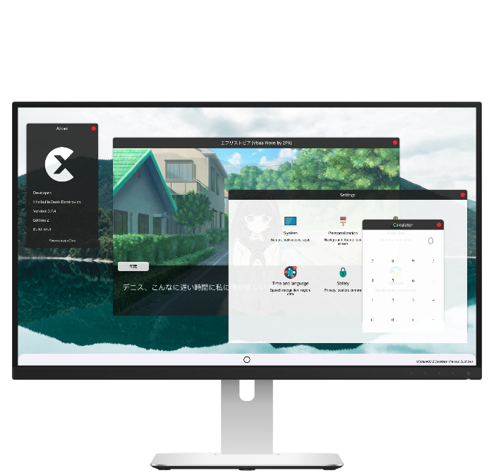

An operating system with great potential.
An updated core xCore. New system shell and transfer interface. Voice Assistant and VM Toolkit for Developers. And much more.
A bit of history.
Rework and restructuring of the xCore project in xFactureOS.
First version for developers.
Redesign of the interface, availability of the HS+ programming language for third-party platforms.
Development and support of the Cloud edition.
Failed release xFactureOS Cloud, the emergence of xFactureOS ID services.
Updating the HS+ programming language. Beginning of Areion UI development. The platform "xFactureOS Platform" is presented. Big changes in xFactureOS Touch. Graphic specification "Canary Design".
Development and implementation of the Volga edition. Updating the Github repository. Intermediate edition X on the new core xCore. Development of a new programming language for xFactureOS.
Release xCore on Github. Development of a new revision Z. The first xCore-based distribution, Bezur OS, is launched. Altair data encryption technology. First entertainment apps for xFactureOS, in partnership with 2PX.
Suspension of xFactureOS development until 2030. Cause: Inability to continue development due to financial instability.
TODO: Reorganizing the xFactureOS Project.
Thank you for being with us all these years and watching and participating in the development and testing.
We hope that the previous roster will cope with all the difficulties in this period from 2022 to 2030.
We also hope to resolve the situation with coronavirus by 2030 in the country and in the world.